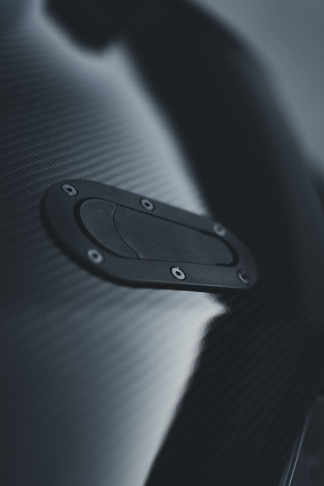
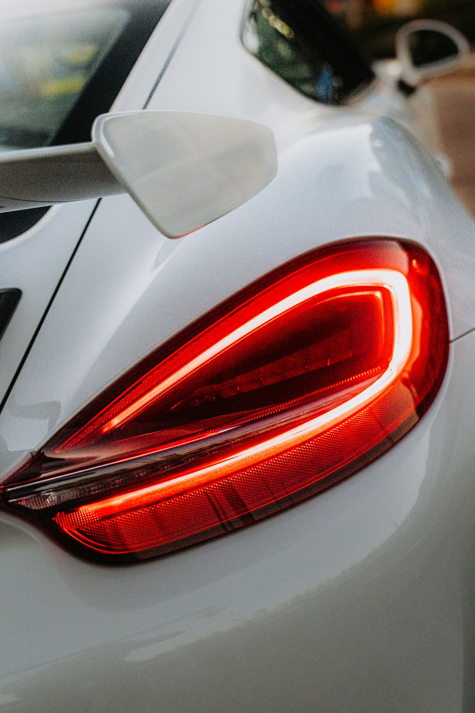
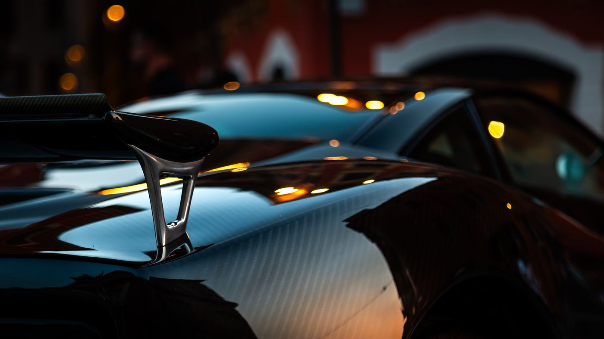
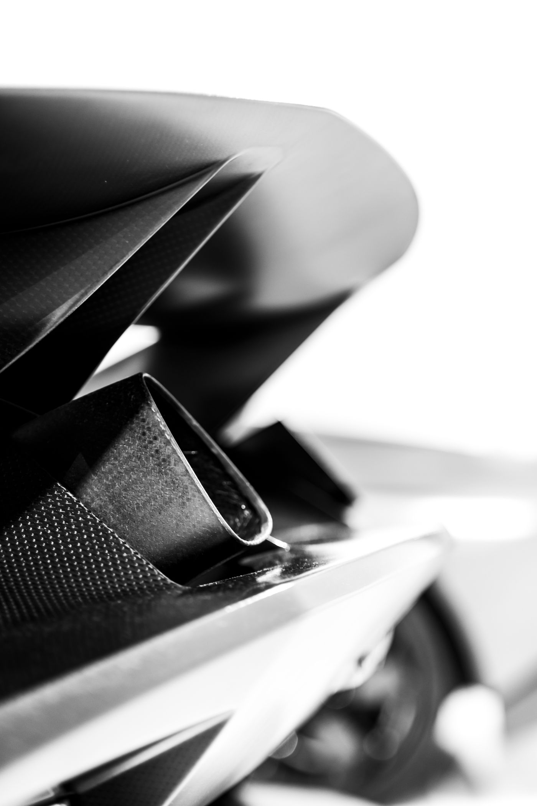

The making of the Aviator
Pure Passion
The Kestrel K8 Aviator Coupé was created by a small circle of designers, engineers and coachbuilders whose work already belongs to Kestrel's modern history. Many had shaped the marque before. Reunited around one conviction, they set out to create the car.




Alis Volat
Propriis
She flies with her own wings.
Since 1898
The Kestrel
heritage
From royal carriages and early aviation to endurance racing and hand-built grand tourers, Kestrel's history has always been shaped by more than one discipline.
Explore Kestrel heritagePartnerships & News
Register for Exclusive Updates
Join an exclusive circle of connoisseurs who will receive updates before the world sees what's next.
Thank you. You'll hear from us first.